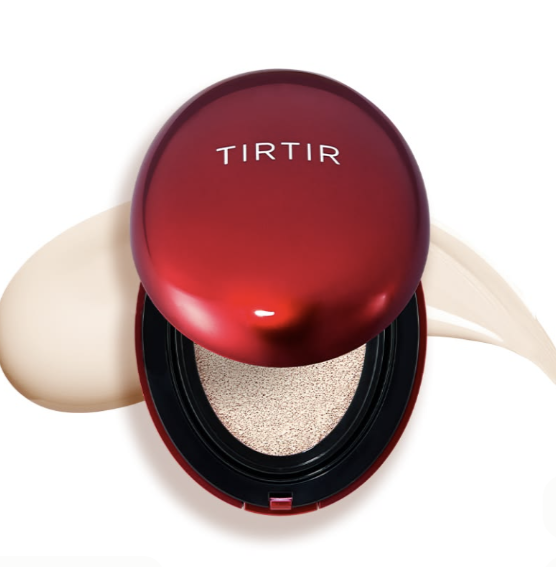
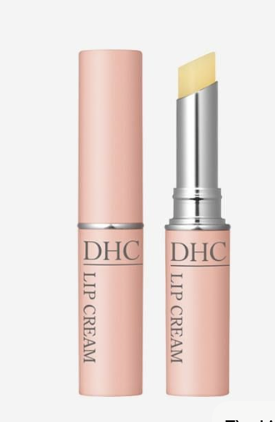
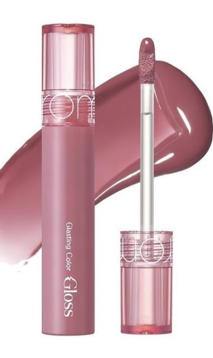
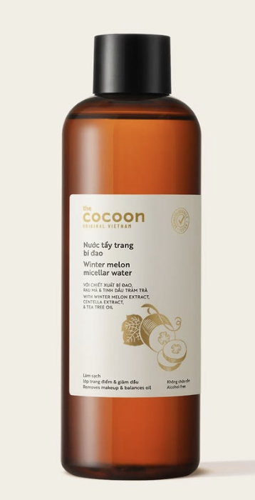
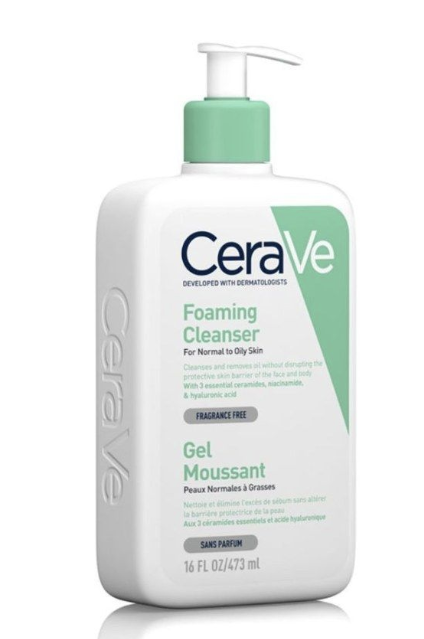
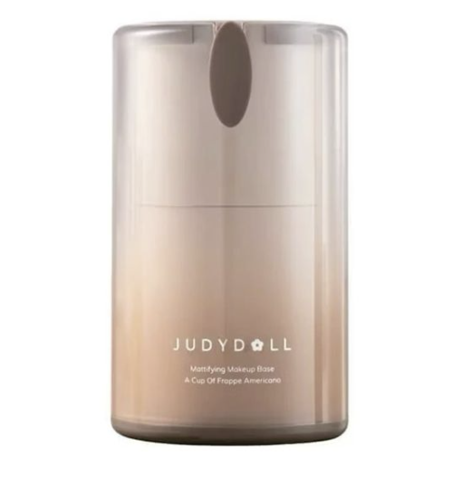

Bí quyết chọn Phấn nước (Cushion) phù hợp cho từng loại da: TIRTIR, Rom&nd, Mistine hay OHUI?
Ngày đăng: 30/10/2026 • Tác giả: Jinie Skin
Nếu bạn có làn da dầu cần độ che phủ cao suốt 10 - 16 giờ, TIRTIR Mask Fit Red Cushion và Cushion Cầu Vồng Mistine là lựa chọn hoàn hảo. Ngược lại, nếu bạn yêu thích lớp nền căng bóng, cấp ẩm sâu tới 70% tinh chất thì Rom&nd Bare Water Cushion và OHUI Ultimate Cover sẽ giúp làn da luôn mịn mướt tự nhiên.
Xem các dòng Cushion →Bài Viết Mới Nhất
Những kiến thức hữu ích về các dòng sản phẩm tại Jinie Skin

Tạm biệt môi khô nứt nẻ với Son Dưỡng Môi DHC Lip Cream Nhật Bản
Thoa một lớp mỏng son dưỡng DHC trước khi ngủ và trước khi đánh son màu giúp giảm thâm môi và giữ môi mềm mịn suốt cả ngày.

So sánh Son Bóng Rom&nd Glasting và Son Tint Amuse Jel-Fit
Cả hai đều mang lại hiệu ứng đôi môi căng mọng trong trẻo chuẩn Hàn Quốc. Cùng tìm hiểu chất son nào hợp với phong cách đi học của bạn nhé!

Tại sao phải tẩy trang mỗi ngày với Nước tẩy trang bí đao Cocoon?
Dù chỉ dùng kem chống nắng, bạn vẫn cần tẩy trang để làm sạch sâu lỗ chân lông, ngăn ngừa mụn ẩn mà vẫn dịu nhẹ, không gây rát da.

Sữa rửa mặt CeraVe: Lựa chọn vàng bảo vệ hàng rào tự nhiên của da
Công thức dịu nhẹ giúp loại bỏ dầu thừa và bụi bẩn hiệu quả mà không làm da bị khô căng hay bong tróc sau khi rửa mặt.

Bí mật để lớp nền mịn mướt không mốc (cakey) nhờ Kem Lót Judydoll
Sử dụng một lượng nhỏ kem lót trước bước phấn nước giúp che phủ lỗ chân lông và giữ lớp trang điểm bền màu suốt cả ngày dài.

Đánh giá Phấn nước OHUI Minisize: Nhỏ gọn, tiện lợi cho túi xách
Thiết kế minisize dễ mang theo đi học, đi chơi với lớp nền mịn lì tự nhiên tựa vải satin nhưng vẫn giữ độ ẩm mượt dễ chịu bên trong da.
3 Quy Tắc Vàng Cho Làn Da Khỏe Đẹp
Kết hợp Nước tẩy trang Cocoon và Sữa rửa mặt CeraVe để da luôn thông thoáng, sạch mụn.
Dùng Kem lót Judydoll và Son dưỡng DHC trước khi makeup để lớp nền và màu son lên chuẩn nhất.
Da dầu nên ưu tiên TIRTIR hoặc Mistine; da khô đến hỗn hợp nên chọn Rom&nd Bare Water.